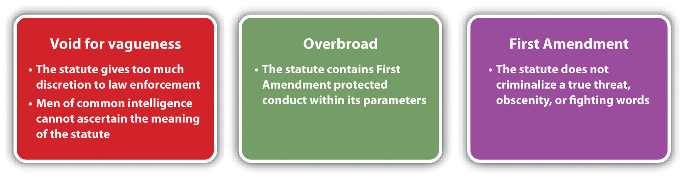
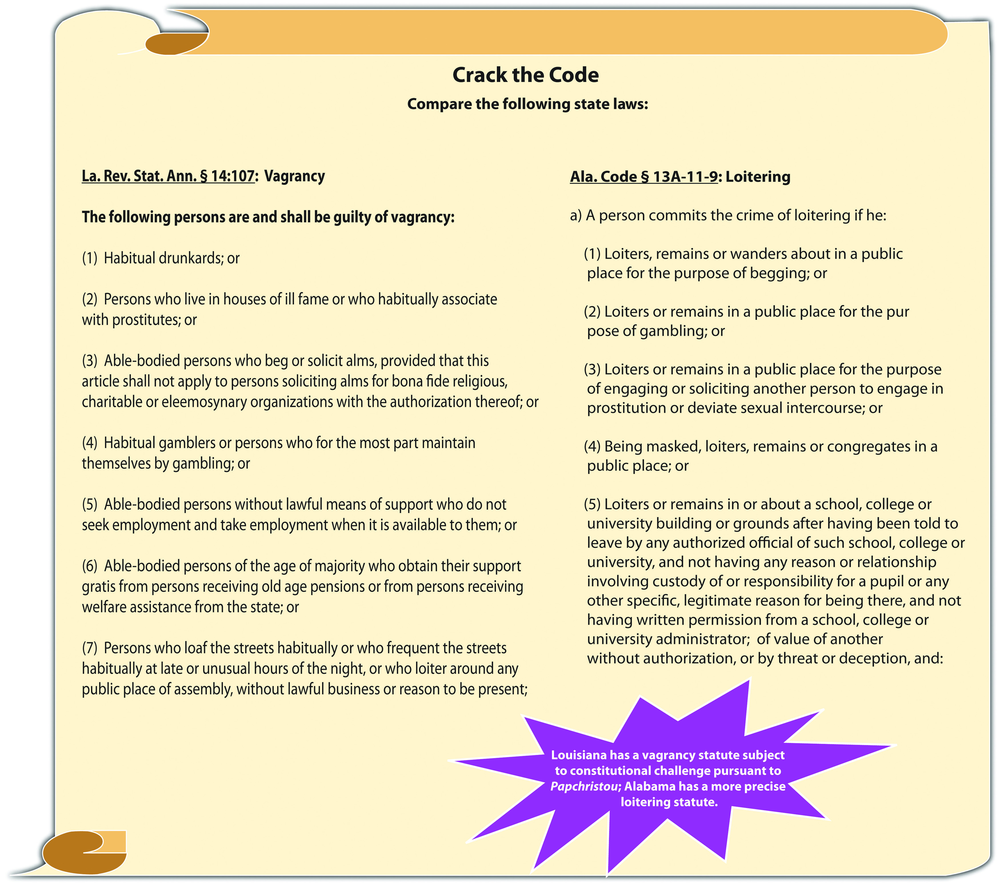
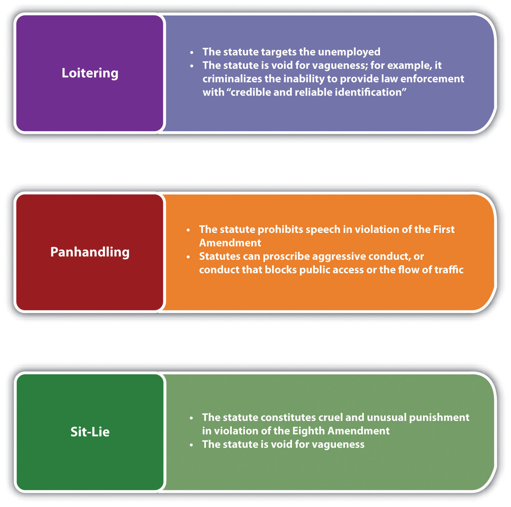

Crimes against the public include offenses that affect the quality of life, group violence such as gang activity, and vice crimes. Because quality-of-life crimes are often based on moral or value judgments, these offenses tend to target the poor and downtrodden. If the conduct prohibited involves an individual’s status in society, assembling, or speech, the First and Fourteenth Amendments require a narrowly tailored statute supported by a compelling government interest. This creates a conflict between legislators trying to ensure peace and tranquility for citizens and judges upholding the many individual protections included in the Bill of Rights.
The quality-of-life offenses discussed are disorderly conduct, vagrancy, and loitering. Upcoming sections analyze crimes involving group activity, such as unlawful assembly and riot, along with the ever-growing problem of criminal gangs, and novel criminal and civil responses. The final section of this chapter discusses common vice crimes, including possession, sale, and use of controlled substances and prostitution.
Disorderly conductIntentional or reckless disruption of the public peace., also called disturbing the peace, criminalizes conduct that negatively impacts the quality of life for citizens in any given city, county, or state. Although disorderly conduct is typically a low-level offense, the enforcement of disorderly conduct statutes is important to preserve citizens’ ability to live, work, and travel in safety and comfort. Disorderly conduct has the elements of criminal act, criminal intent, and an attendant circumstance, as is explored in Section 12.1.1 "Disorderly Conduct".
Three criminal acts generally are identified in any disorderly conduct statute. The defendant must either (1) make a loud and unreasonable noise, obscene utterance, or gesture, (2) engage in fighting or threatening, or state fighting words, or (3) create a hazardous condition by an act that does not serve a legitimate purpose.18 Pa. C. S. § 5503, accessed April 2, 2011, http://law.onecle.com/pennsylvania/crimes-and-offenses/00.055.003.000.html. The Model Penal Code defines disorderly conduct as engaging in fighting or threatening or violent tumultuous behavior, making unreasonable noise or an offensively course utterance, gesture, or display, addressing abusive language to any person present, or creating a hazardous or physically offensive condition by an act that serves no legitimate purpose (Model Penal Code § 250.2). When the criminal act is a loud and unreasonable noise, the quality of the noise is judged in the setting where the noise occurred. A noise made in an extremely quiet area can be softer than a noise made in a loud and busy area like a city street during peak hours.Haw. Rev. Stat. § 711-1101(2), accessed April 2, 2011, http://www.capitol.hawaii.gov/hrscurrent/vol14_Ch0701-0853/HRS0711/HRS_0711-1101.htm. The term “hazardous condition” generally refers to a situation that is dangerous and poses a risk of injury to others in the vicinity of the defendant’s conduct.Wolfe v. State, 24 P.3d 1252 (2001), accessed April 2, 2011, http://scholar.google.com/scholar_case?case=8611678948602739716&q= disorderly+conduct+%22hazardous+condition%22&hl=en&as_sdt=2,5&as_ylo=2000.
David and Daniel leave a party in a quiet neighborhood at three in the morning. Both are inebriated. After walking a couple of blocks and telling stories, they begin singing loudly with their arms wrapped around each other. David stumbles and trips Daniel, who falls heavily to the sidewalk. Daniel gets up and starts screaming and swearing at David, challenging him to fight. David yells back, “Bring it on!” David pushes Daniel, he pushes back, and they begin punching and kicking. In this instance, David and Daniel have probably committed three separate disorderly conduct offenses. When David and Daniel began singing at three in the morning on a quiet street, they made a loud and unreasonable noise. When they challenged each other to fight, they uttered threats or stated fighting words. When they engaged in a fistfight, they committed fighting, or created a hazardous condition. Thus David and Daniel are most likely subject to a prosecution for and conviction of three counts of disorderly conduct in many jurisdictions.
The criminal intent element required for disorderly conduct in many jurisdictions is the specific intent or purposely to cause public inconvenience, annoyance, or alarm, or the reckless intent to cause a risk thereof.Ala. Code § 13A-11-7, accessed April 3, 2011, http://law.onecle.com/alabama/criminal-code/13A-11-7.html. The Model Penal Code has the same criminal intent requirement (Model Penal Code § 250.2(1)).
Review the example given in Section 12 "Example of Disorderly Conduct Act" with David and Daniel. David and Daniel may not have had the specific intent to cause public inconvenience, annoyance, or alarm; however, their behavior in a quiet neighborhood late at night displays the reckless intent to cause a risk of such inconvenience, annoyance, or alarm. Although David and Daniel are inebriated, recall from Chapter 6 "Criminal Defenses, Part 2" that intoxication is not generally a defense to a reckless intent crime. Thus a trier of fact could find that David and Daniel have the appropriate criminal intent for disorderly conduct, and they may both be subject to conviction of this offense.
In many jurisdictions, disorderly conduct requires the attendant circumstance that the conduct occur in a public place.Tex. Penal Code § 42.01, accessed April 2, 2011, http://law.onecle.com/texas/penal/42.01.00.html. This goes along with the purposeful or reckless intent to inconvenience, annoy, or alarm the public, or create a risk thereof. The Model Penal Code defines public as “affecting or likely to affect persons in a place to which the public or a substantial group has access…highways, transport facilities, schools, prisons, apartment houses, places of business or amusement, or any neighborhood” (Model Penal Code § 250.2).
Review the example in Section 12 "Example of Disorderly Conduct Act" with David and Daniel. David and Daniel commit their acts of loud and unreasonable noise, threats, fighting words, fighting, and creating a hazardous condition on a sidewalk in a neighborhood. Thus in jurisdictions that require the disorderly conduct attendant circumstance of a public place, David and Daniel may be subject to prosecution for and conviction of this offense. If David and Daniel committed exactly the same acts in a private residence located on fifty acres with no neighbors for miles, the attendant circumstance for disorderly conduct would be lacking, along with the criminal intent to annoy, inconvenience, or alarm the public.
Because disorderly conduct statutes often criminalize obscene gestures and words, threats, and fighting words, they are subject to constitutional challenges under the First and Fourteenth Amendments. However, not all speech is protected under the First Amendment. As Chapter 3 "Constitutional Protections" discusses in detail, it is constitutional to regulate obscenity, true threats, and fighting words. Nonetheless, any statute criminalizing speech or expression is subject to strict scrutiny, must be narrowly drafted, and supported by a compelling government interest. Thus two common grounds for challenging disorderly conduct statutes are void for vagueness and overbreadth.Colten v. Kentucky, 407 U.S. 104 (1972), accessed April 3, 2011, http://scholar.google.com/scholar_case?case=7926620308068158831&q= Colten+v.+Kentucky&hl=en&as_sdt=2,5.
A state legislature enacts a disorderly conduct statute that prohibits “making rude and annoying comments to another.” This statute is most unlikely unconstitutional under the First and Fourteenth Amendments. The words rude and annoying are ambiguous, which could lead to uneven application by law enforcement and a failure to provide adequate notice to the public of what is criminal. Therefore, the statute can be stricken as void for vagueness. In addition, rude and annoying comments are not necessarily fighting words, true threats, or obscenity, so they could be protected under the First Amendment. This means that the statute could also be stricken as overbroad because it includes protected and unprotected conduct within its parameters. For a fuller and more detailed description of void for vagueness and overbreadth constitutional challenges, please refer to Chapter 3 "Constitutional Protections".
Figure 12.1 Potential Constitutional Challenges to Disorderly Conduct Statutes
As stated previously, disorderly conduct is a low-level offense that is typically graded as a misdemeanor.N.C. Gen. Stat. § 14-132, http://law.onecle.com/north-carolina/14-criminal-law/14-132.html. The Model Penal Code grades disorderly conduct as a petty misdemeanor if the defendant’s purpose is to cause substantial harm or serious inconvenience or if the defendant persists with his or her conduct after a warning. Otherwise, the Model Penal Code grades disorderly conduct as a violation (Model Penal Code § 250.2(2)).
Although the government technically does not have an interest in punishing individuals for who they are, such as an impoverished person or a transient, the public perception of law enforcement is often affected by the presence of so-called vagrants and panhandlers in any given area. Thus virtually every jurisdiction has statutes punishing either vagrancyA quality-of-life crime that prohibits immoral and illegitimate behavior. or loiteringLoitering, wandering, or remaining in specified locations for the purpose of committing a crime or for another illegitimate reason.. However, these statutes are subject to constitutional attack if they are void for vagueness, overbroad, or target status.
Historically, vagrancy statutes were broadly drafted to allow law enforcement considerable discretion in arresting the unemployed, gamblers, drug addicts, alcoholics, and those who frequented houses of prostitution or other locations of ill repute. In a sense, vagrancy statutes attempted to incapacitate individuals before they engaged in criminal activity, to ensure the safety and security of any given area.
In 1972, the US Supreme Court struck down a Florida vagrancy statute in Papachristou v. City of Jacksonville, 405 U.S. 156 (1972). The Court held that the statute, which prohibited night walking, living off one’s spouse, and frequenting bars or liquor stores was void for vagueness and violated the due process clause in the Fourteenth Amendment. Thereafter, many states repealed or modified vagrancy statutes in lieu of more precisely drafted statutes prohibiting specific criminal conduct such as loitering. The Model Penal Code prohibits public drunkenness and drug incapacitation (Model Penal Code § 250.5) and loitering or prowling (Model Penal Code § 250.6). To summarize US Supreme Court precedent refining loitering statutes: it is unconstitutional to target those who are unemployedEdwards v. California, 314 U.S. 160 (1941), accessed April 5, 2011, http://scholar.google.com/scholar_case?case=6778891532287614638&hl=en&as_sdt=2&as_vis=1&oi=scholarr. or to enact a statute that is vague, such as a statute that criminalizes loitering in an area “with no apparent purpose,”City of Chicago v. Morales, accessed April 5, 2011, 527 U.S. 41 (1999), http://supreme.justia.com/us/527/41/case.html. or without the ability to provide law enforcement with “credible and reliable identification.”Kolender v. Lawson, accessed April 5, 2011, 461 U.S. 352 (1983), http://supreme.justia.com/us/461/352.
In a jurisdiction that criminalizes loitering, the criminal act element is typically loitering, wandering, or remaining, with the specific intent or purposely to gamble, beg, or engage in prostitution.Ala. Code § 13A-11-9, accessed April 5, 2011, http://law.onecle.com/alabama/criminal-code/13A-11-9.html. An attendant circumstance could specify the location where the conduct takes place, such as a school or transportation facility.Ariz. Rev. Stat. § 13-2905, accessed April 5, 2011, http://law.onecle.com/arizona/criminal-code/13-2905.html. Another common attendant circumstance is being masked in a public place while loitering, with an exception for defendants going to a masquerade party or participating in a public parade.Ala. Code § 13A-11-9, accessed April 5, 2011, http://law.onecle.com/alabama/criminal-code/13A-11-9.html. The Model Penal Code prohibits loitering or prowling in a place, at a time, or in a manner not usual for law-abiding individuals under circumstances that warrant alarm for the safety of persons or property in the vicinity (Model Penal Code § 250.6). Loitering is generally graded as a misdemeanorAriz. Rev. Stat. § 13-2905, accessed April 5, 2011, http://law.onecle.com/arizona/criminal-code/13-2905.html. or a violation.Ala. Code § 13A-11-9, accessed April 5, 2011, http://law.onecle.com/alabama/criminal-code/13A-11-9.html. The Model Penal Code grades loitering as a violation (Model Penal Code § 250.6).
Figure 12.2 Crack the Code
Many jurisdictions also criminalize panhandlingAsking individuals for money in an aggressive manner or in a way that blocks public access. or begging. Panhandling statutes essentially criminalize speech, so they must be narrowly tailored to avoid successful constitutional challenges based on the First Amendment, void for vagueness, or overbreadth. Constitutional panhandling statutes generally proscribe aggressive conductGresham v. Peterson, 225 F.3d 899 (2000), accessed April 5, 2011, http://scholar.google.com/scholar_case?case=12046859312956994237&q= %22Gresham+v.+Peterson%22&hl=en&as_sdt=2,5. or conduct that blocks public access or the normal flow of traffic.
One modern statutory approach to preventing homeless individuals and transients from congregating in cities and affecting the quality of life or the prosperity of businesses and tourism are sit-lie lawsStatutes and ordinances that prohibit sitting or lying on a public sidewalk or street.. Sit-lie laws prohibit sitting or lying on public streets and sidewalks and thereby encourage individuals to move about, rather than block access to businesses, roadways, or transportation facilities. If precisely drafted, sit-lie laws could resemble constitutional loitering statutes, substituting sitting or lying down for the criminal act of loitering, wandering, or remaining. However, these statutes are susceptible to the same constitutional challenges as vagrancy and loitering statutes because they target the impoverished, addicts, and the unemployed.
Seattle was the first city in the United States to enact a sit-lie ordinance in 1993 that prohibited sitting or lying on a public sidewalk between the hours of 7 a.m. and 9 p.m. in Seattle’s downtown area. The ordinance was attacked and ultimately upheld by the US Court of Appeals for the Ninth Circuit in 1996.Heather Knight, “San Francisco Looks to Seattle: Did Sidewalk Sitting Ban Help?” seattlepi.com website, accessed April 5, 2011, http://www.seattlepi.com/default/article/San-Francisco-looks-to-Seattle-Did-sidewalk-888774.php. Los Angeles thereafter enacted a more comprehensive ordinance that banned sitting, lying, or sleeping on public streets and sidewalks at all times and in all places within Los Angeles city limits. This ordinance was stricken by the same court as unconstitutional cruel and unusual punishment pursuant to the Eighth Amendment.Jones v. City of Los Angeles, 444 F.3d 1118 (2006), accessed April 5, 2011, http://scholar.google.com/scholar_case?case=4259488333208893136&q= Jones+v.+City+of+Los+Angeles+2005&hl=en&as_sdt=2,5&as_ylo=2004. The court held that the homeless in Los Angeles far outnumbered the amount of space available in homeless shelters, and therefore the ordinance punished defendants for conduct that was involuntary. Portland followed Los Angeles with a sidewalk-obstruction ordinance, requiring individuals to keep their personal belongings within two feet of their bodies. This ordinance was stricken as void for vagueness in 2009.Matt Davis, “Sit/Lie Law Unconstitutional,” Portland Mercury website, accessed April 5, 2011, http://blogtown.portlandmercury.com/BlogtownPDX/archives/2009/02/19/judge_rules_sit_lie_law_uncons.
The most recent enactment of a sit-lie ordinance took place in San Francisco in 2010. The San Francisco ordinance is modeled after the Seattle ordinance and prohibits sitting or lying on a public sidewalk in the city limits between 7 a.m. and 9 p.m., with exceptions for medical emergencies, protests, or those who have disabilities.San Francisco Police Code § 16.8, accessed April 5, 2011, http://www.sfgov2.org/ftp/uploadedfiles/elections/candidates/Nov2010_CivilSidewalks.pdf. The first offense is an infraction, and the second offense is a misdemeanor.San Francisco Police Code § 16.8, accessed April 5, 2011, http://www.sfgov2.org/ftp/uploadedfiles/elections/candidates/Nov2010_CivilSidewalks.pdf. If the San Francisco ordinance successfully reduces the presence of transients and is upheld as constitutional, other cities that desire the same results could soon follow suit.
Figure 12.3 Potential Constitutional Challenges to Loitering, Panhandling, and Sit-Lie Laws
Table 12.1 Comparing Disorderly Conduct, Loitering, and Sit-Lie Laws
| Crime | Criminal Act | Criminal Intent | Attendant Circumstance |
|---|---|---|---|
| Disorderly conduct | Unreasonable noise, obscene utterance or gesture, fighting, threats, fighting words, creating a hazardous condition | Specific or purposely or recklessly to disturb the public or create a risk thereof | Act takes place in public |
| Loitering | Loitering, wandering, remaining | Specific or purposely to beg, gamble, solicit prostitution | Act takes place near a school, transportation facility: the defendant is masked |
| Sit-lie law | Sitting or lying down | Strict liability* | Act takes place between certain times of day, in public, on a sidewalk, or on a street |
| *Exceptions for medical emergencies, people who have disabilities, protests | |||
Answer the following questions. Check your answers using the answer key at the end of the chapter.